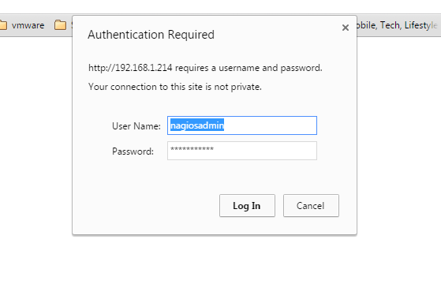
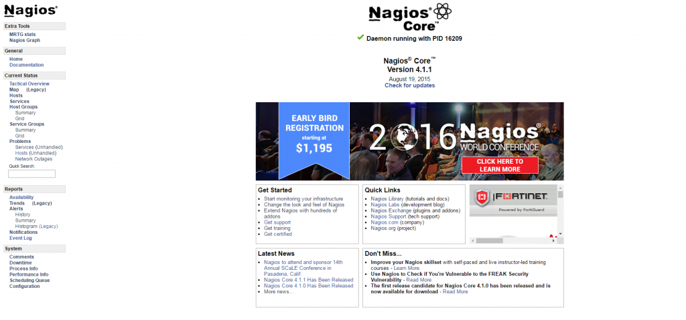
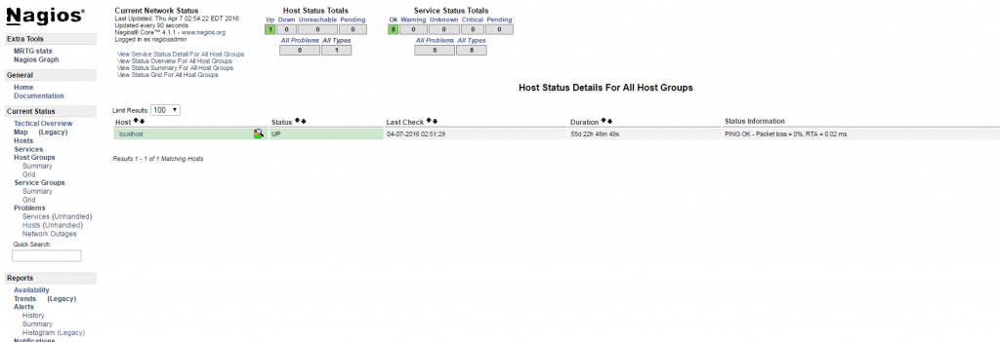
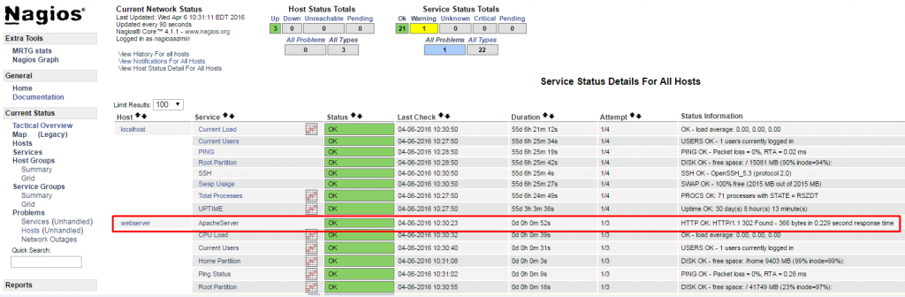

In this article, we will be covering about the installation of Nagios 4, a very popular and open source monitoring tool on Centos 6.7. We shall cover some basic configuration steps which might be useful to monitor a host of resources via the web interface. Here, we shall also utilize the Nagios Remote Plugin Executor (NRPE) that is installed as an agent on remote hosts to monitor the local resources of Servers/clients.
Nagios is useful for keeping an inventory of your servers, and making sure your critical services are up and running. Using a monitoring system, Nagios is an essential tool for any production server environment.
Prerequisites
To configure Nagios, we must have a root user privilege on the Linux server that will run Nagios Ideally.
Installing Nagios 4
Creating Nagios User and Group: We must create a user and group that will run the Nagios process. Create a “Nagios” user and “nagcmd” group, then add the user to the group with these commands
# useradd nagios # groupadd nagcmd # usermod -a -G nagcmd nagios
Install Build Dependencies
As we are building Nagios Core from source, we must install a few development libraries that will allow us to complete the build. While we’re at it, we will also install apache2-utils, which will be used to set up the Nagios web interface.
First, Update your Yum Package Lists
# yum update
Then, Install the Required Packages
# yum install -y httpd php gcc glibc glibc-common gd gd-devel make net-snmp perl-rrd xinetd openssl-devel package perl-GD* ntp perl-rrd*
Download the Nagios 4.1.1 Core & Plugin
# wget http://prdownloads.sourceforge.net/sourceforge/nagios/nagios-4.1.1.tar.gz # wget https://www.nagios-plugins.org/download/nagios-plugins-2.1.1.tar.gz
Installing Nagios Core 4.1.1
We need to extract downloaded package with tar command as follows.
# tar –xvf nagios-4.1.1.tar.gz # cd nagios-*
Before building Nagios, we must configure it. If you want to configure it to use postfix (which you can install with apt-get), add –with-mail=/usr/sbin/sendmail to the following command:
# ./configure --with-nagios-group=nagios --with-command-group=nagcmd
Output:
General Options:
-------------------------
Nagios executable: nagios
Nagios user/group: nagios,nagios
Command user/group: nagios,nagcmd
Event Broker: yes
Install ${prefix}: /usr/local/nagios
Install ${includedir}: /usr/local/nagios/include/nagios
Lock file: ${prefix}/var/nagios.lock
Check result directory: ${prefix}/var/spool/checkresults
Init directory: /etc/init.d
Apache conf.d directory: /etc/httpd/conf.d
Mail program: /usr/bin/mail
Host OS: nagios.test.com
Web Interface Options:
------------------------
HTML URL: http://localhost/nagios/
CGI URL: http://localhost/nagios/cgi-bin/
Traceroute (used by WAP): /usr/sbin/traceroute
Review the options above for accuracy. If they look okay,
type 'make all' to compile the main program and CGIs
*** Main program, CGIs and HTML files installed ***
Now compile Nagios with this command:
Output:
You can continue with installing Nagios as follows (type 'make'without any arguments for a list of all possible options):
# make install-init
– This installs the init script in /etc/rc.d/init.d
# make install-commandmode
– This installs and configures permissions on the directory for holding the external command file
# make install-init
To make nagios work from the command line we need to install command-mode.
# make install-commandmode
Next, install sample nagios files, please run following command.
# make install-config Output: /usr/bin/install -c -m 775 -o nagios -g nagios -d /usr/local/nagios/etc /usr/bin/install -c -m 775 -o nagios -g nagios -d /usr/local/nagios/etc/objects /usr/bin/install -c -b -m 664 -o nagios -g nagios sample-config/nagios.cfg /usr/local/nagios/etc/nagios.cfg /usr/bin/install -c -b -m 664 -o nagios -g nagios sample-config/cgi.cfg /usr/local/nagios/etc/cgi.cfg /usr/bin/install -c -b -m 660 -o nagios -g nagios sample-config/resource.cfg /usr/local/nagios/etc/resource.cfg /usr/bin/install -c -b -m 664 -o nagios -g nagios sample-config/template-object/templates.cfg /usr/local/nagios/etc/objects/templates.cfg/usr/bin/install -c -b -m 664 -o nagios -g nagios sample-config/template-object/commands.cfg /usr/local/nagios/etc/objects/commands.cfg /usr/bin/install -c -b -m 664 -o nagios -g nagios sample-config/template-object/contacts.cfg /usr/local/nagios/etc/objects/contacts.cfg /usr/bin/install -c -b -m 664 -o nagios -g nagios sample-config/template-object/timeperiods.cfg /usr/local/nagios/etc/objects/timeperiods.cfg /usr/bin/install -c -b -m 664 -o nagios -g nagios sample-config/template-object/localhost.cfg /usr/local/nagios/etc/objects/localhost.cfg /usr/bin/install -c -b -m 664 -o nagios -g nagios sample-config/template-object/windows.cfg /usr/local/nagios/etc/objects/windows.cfg /usr/bin/install -c -b -m 664 -o nagios -g nagios sample-config/template-object/printer.cfg /usr/local/nagios/etc/objects/printer.cfg /usr/bin/install -c -b -m 664 -o nagios -g nagios sample-config/template-object/switch.cfg /usr/local/nagios/etc/objects/switch.cfg *** Config files installed ***
Install Nagios Plugins
Find the latest release of Nagios Plugins here: Nagios Plugins Download. Copy the link address for the latest version, and copy the link address so you can download it to your Nagios server.
At the time of this writing, the latest version is Nagios Plugins 2.1.1.
# cd /root/nagios # cd tar –xvf nagios-plugins-2.1.1.tar.gz # ./configure --with-nagios-user=nagios --with-nagios-group=nagios --with-openssl=/usr/bin/openssl --enable-perl-modules --enable-libtap # make # make install
Install NRPE
Find the source code for the latest stable release of NRPE at the NRPE downloads page. Download the latest version to your Nagios server.
At the time of this writing, the latest release is 2.15.
# mkdir -p /usr/local/src/nrpe # cd /usr/local/src/nrpe
Download the Files and Extract
# wget http://kent.dl.sourceforge.net/project/nagios/nrpe-2.x/nrpe-2.15/nrpe-2.15.tar.gz # tar -xf nrpe-2.15.tar.gz # cd nrpe-2.15
Because of an issue with the OpenSSL library folder, we need to use another path than /usr/lib:
#./configure --with-ssl=/usr/bin/openssl --with-ssl-lib=/usr/lib/x86_64-linux-gnu
Now make and make install
# make all
Next, install the NRPE plugin daemon, and sample daemon config file.
# make install-plugin # make install-daemon # make install-daemon-config
Install the NRPE daemon under xinetd as a service.
# make install-xinetd
Next, open /etc/services file, add the following entry for the NRPE daemon at the bottom of the file.
# vi /etc/services nrpe 5666/tcp NRPE
Restart the xinetd service.
# service xinetd restart
Verify NRPE Daemon Locally
Run the following command to verify the NRPE daemon working correctly under xinetd.
# netstat -at | grep nrpe tcp 0 0 *:nrpe *:* LISTEN
Verify the NRPE daemon is functioning properly.
# /usr/local/nagios/libexec/check_nrpe -H localhost Output: NRPE v2.15
Now that Nagios 4.1.1 is installed, we need to configure it.
Configure Nagios
Now let’s perform the initial Nagios configuration. You only need to perform this section once, on your Nagios server.
Open the main Nagios configuration file in your favorite text editor. We’ll use vi to edit the file:
# vi /usr/local/nagios/etc/nagios.cfg
Now find an uncomment this line by deleting the #
# cfg_dir=/usr/local/nagios/etc/servers
Now create the directory that will store the configuration file for each server that you will monitor:
# mkdir /usr/local/nagios/etc/servers
Configure Nagios Contacts
Open the Nagios contacts configuration in your favorite text editor. We’ll use vi to edit the file
# vi /usr/local/nagios/etc/objects/contacts.cfg
Find the email directive, and replace its value (the highlighted part) with your own email address
email nagios@localhost ; <<***** CHANGE THIS TO YOUR EMAIL ADDRESS ******
Configure check_nrpe Command
Let’s add a new command to our Nagios configuration
# vi /usr/local/nagios/etc/objects/commands.cfg
Add the following to the end of the file
define command{
command_name check_nrpe
command_line $USER1$/check_nrpe -H $HOSTADDRESS$ -c $ARG1$
}
Install and Configure Web Interface for Nagios
We are done with all configurations in the back end, now we will configure Web Interface For Nagios with following command. The below command will Configure Web interface for Nagios and a web admin user will be created “nagiosadmin”.
# make install-webconf
In this step, we will be creating a password for “nagiosadmin”. After executing this command, please provide a password twice and keep it remember because this password will be used when you login in the Nagios Web interface.
# htpasswd -s -c /usr/local/nagios/etc/htpasswd.users nagiosadmin New password:************ Re-type new password:************
Adding password for user nagiosadmin
Restart Apache to make the new settings take effect.
# service httpd start
Nagios is now running, so let’s try and log in.
Accessing the Nagios Web Interface
Open your favorite web browser, and go to your Nagios server http://nagios_server_public_IP or private IP address/nagios.
Because we configured Apache to use htpasswd, you must enter the login credentials that you created earlier. We used “nagiosadmin” as the username:

After authenticating, you will be seeing the default Nagios home page. Click on the Hosts link, in the left navigation bar, to see which hosts Nagios is monitoring
As you can see, Nagios is monitoring only “localhost”, or itself.

Monitor / Adding a new host with NRPE
In this section, we’ll show you how to add a new host to Nagios, so it will be monitored. Repeat this section for each server you wish to monitor.
On a server that you want to monitor, update apt-get:
# yum update
Now install Nagios Plugins and NRPE:
# yum install nagios-plugins nagios-nrpe-server
Configure Allowed Hosts
Now, let’s update the NRPE configuration file. Open it in your favorite editor (we’re using vi)
# vi /etc/nagios/nrpe.cfg
Find the allowed_hosts directive, and add the private IP address of your Nagios server to the comma-delimited list (substitute it in place of the highlighted example)
allowed_hosts=127.0.0.1,10.132.224.168
Save and exit. This configures NRPE to accept requests from your Nagios server, via its private IP or public IP address.
To add the host:
# cd /usr/local/nagios/etc # vi /usr/local/nagios/etc/hosts.cfg
define host{
name linux-box ; Name of this template
use generic-host ; Inherit default values
check_period 24x7
check_interval 5
retry_interval 1
max_check_attempts 10
check_command check-host-alive
notification_period 24x7
notification_interval 30
notification_options d,r
contact_groups admins
register 0
}
define host{
use linux-box ; Inherit default values from a template
host_name Testbox ; The name we're giving to this server
alias CentOS 6.7 ; A longer name for the server
address 192.168.1.84 ; IP address of Remote Linux host
}
To add the services we needed to edit the services.cfg file we are adding CPU Load, Total Process, Current Users, Root Partition, Home Partition, Ping status
# vi /usr/local/nagios/etc/services.cfg
define service{
use generic-service
host_name TestBox
service_description CPU Load
check_command check_nrpe!check_load
}
define service{
use generic-service
host_name Testbox
service_description Total Processes
check_command check_nrpe!check_total_procs
}
define service{
use generic-service
host_name Testbox
service_description Current Users
check_command check_nrpe!check_users
}
define service{
use generic-service
host_name Testbox
service_description Root Partition
check_command check_nrpe!check_disk
}
define service{
use generic-service
host_name Testbox
service_description Home Partition
check_command check_nrpe!check_disk_home
}
define service{
use generic-service
host_name Testbox
service_description Ping Status
check_command check_ping!10.0,80%!50.0,90%
}
We needed to add this configuration file in nagios.cfg
# vi /usr/local/nagios/nagios.cfg cfg_file=/usr/local/nagios/etc/hosts.cfg cfg_file=/usr/local/nagios/etc/services.cfg
Now NRPE commands should definition needs to be created in commands.cfg file.
# vi /usr/local/nagios/etc/objects/commands.cfg
define command{
command_name check_nrpe
command_line $USER1$/check_nrpe -H $HOSTADDRESS$ -c $ARG1$
}
Finally, verify Nagios Configuration files for any errors.
Verify Nagios Configuration Files
Now we are all done with Nagios configuration and its time to verify it and to do so please run below command. If everything goes smoothly it will show up similar to below output.
# /usr/local/nagios/bin/nagios -v /usr/local/nagios/etc/nagios.cfg Output: Nagios Core 4.1.1 Copyright (c) 2009-present Nagios Core Development Team and Community Contributors Copyright (c) 1999-2009 Ethan Galstad Last Modified: 08-19-2015 License: GPL Website: https://www.nagios.org Reading configuration data... Read main config file okay... Read object config files okay... Running pre-flight check on configuration data... Checking objects... Checked 7 services. Checked 1 hosts. Checked 1 host groups. Checked 0 service groups. Checked 1 contacts. Checked 1 contact groups. Checked 7 commands. Checked 5 time periods. Checked 0 host escalations. Checked 0 service escalations. Checking for circular paths... Checked 1 hosts Checked 0 service dependencies Checked 0 host dependencies Checked 1 timeperiods Checking global event handlers... Checking obsessive compulsive processor commands... Checking misc settings... Total Warnings: 0 Total Errors: 0 Things look okay - No serious problems were detected during the pre-flight check
Restarting the Nagios Server
# service nagios reload Running configuration check... Stopping nagios: done. Starting nagios: done.
Monitor Apache Web Server
Nagios can be used to monitor Apache web server as well.
Apache Monitoring Requirements
Monitor whether the apache server is available. This task is really easy as Nagios has a built-in command for this we needed to edit below file.
# vi /etc/nagios3/conf.d/services.cfg
define service{
use generic-service
host_name Webserver
service_description Check Apache Web Server
check_command check_http
}
Once we are done, please check the Nagios configuration and restart the services when we open web interfaces and click on services, we can see Apache services are monitoring.
Conclusion
Now that you know about Nagios and its features like monitoring your hosts and some of the services, you might want to spend some time to figure out which services are critical to you so you can start monitoring these servers. You may also want to set up notifications so, for example, you receive an email when your disk utilization reaches a warning or critical threshold or your main website is down, so you can resolve the situation promptly or before a problem even occurs.


{kind=link}
{kind=link}
{kind=link}